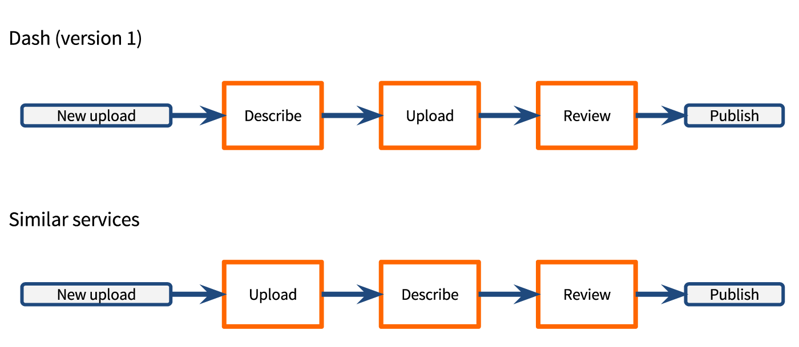
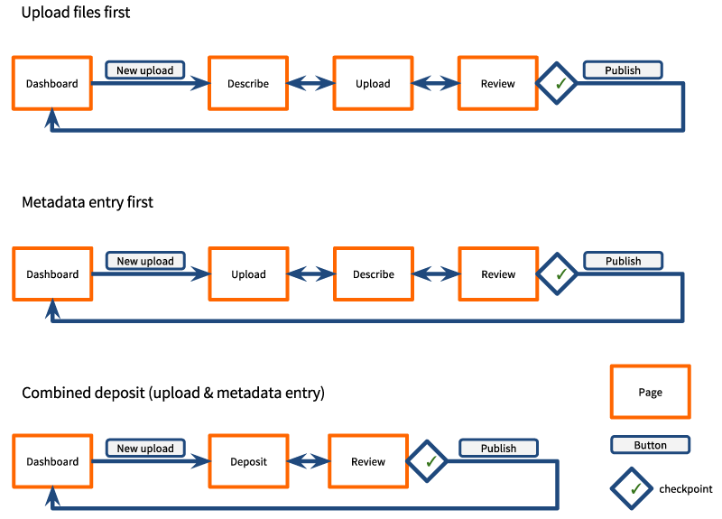

Dash: Data Sharing Made Easy
Comparative Analysis, Usability Testing, UX Design
Introduction
Dash is a web application and service developed by the California Digital Library (CDL) for University of California researchers to advance open science and comply with funder and publisher mandates by publishing their data. Because the amount of time required to share data is a major barrier, Dash adopts a streamlined approach– researchers in a hurry can self-deposit datasets easily with minimal description, while those with time and inclination can add rich, structured metadata to make their data more discoverable and reusable.
Problem
For the second major version of Dash, the CDL received a grant from the Alfred P. Sloan foundation to completely rewrite the application with a modular underlying architecture and to redesign the UI for a better user experience. My charge was to research, design, and test the new interface. In the process, I collaborated multiple managers, back- and front-end developers, an additional UX designer (Jane Lee), and an external visual designer (Randle Design).
For the redesigned interface, we had four main goals:
- Make sure the submission workflow was as easy as possible. Because we expected most researchers to deposit infrequently, we prioritized learnability by unfamiliar users over usability by experts.
- Redesign the “landing page” where information about a dataset is displayed to make it more readable in the manner of a scientific article.
- Lighten and modernize the overall look and feel to be less clunky and institutional.
- Incorporate responsive design so that, at a minimum, a user on a mobile device can easily learn enough about a dataset to decide whether to download it later.
Submission Workflow
Research: Comparative Analysis
The first step In reconsidering the submission workflow was to conduct a comparative analysis of similar services to explore the space of possible solutions and discover any predominating conventions that users might expect. I examined the submission workflows and feature sets of three other data publication applications.
While Dash asks users to enter dataset description first and then upload files, all of the other services begin with file upload.
We decided to test both submission workflows, plus a third alternative in which users could upload files and enter description on the same page in either order.
To do this, I built interactive prototypes in Axure to simulate each of the three submission workflows.
Design: Workflows
To obtain new-user impressions, I recruited academic users unfamiliar with Dash for testing. A UX teammate (Jane Lee) conducted tests of the workflows while I took notes. Surprisingly, none of the users preferred the conventional upload-first workflow. Opinions were split between the other two, but the existing workflow was more immediately understood.
The solution we ultimately settled on was to leave the existing dash workflow intact, but enable users to freely navigate between steps via a process map at the top of each page.
Landing/Item Page
In many ways, the most important page in Dash is the item/landing page, which displays a dataset’s documentation together with a download link. The most common ways data consumers arrive at Dash go through the landing page: it is indexed by external search engines, the dataset’s Digital Object Identifier (DOI) resolves to it, and associated articles link to it.
Resarch: Comparative Analysis
To strengthen the association between article and data publication and make the landing page more readable for academic audiences, I decided to model the redesigned Dash landing page on the landing pages of journal articles. I conducted a comparative analysis of landing pages of seven data publication services and five academic journals, considering functionality, layout, what metadata was presented, and metadata presentation formats.
An example finding was that although author names were typically actionable, the functionality was inconsistent. In some cases, clicking on an author name initiated a new search; in others, it opened a popup with additional author information. An informal survey of scientists confirmed that they did not have clear or consistent expectations of the outcome. To avoid this confusion, I decided that Dash author names would not be actionable, and that all author information would be displayed in the open.
{kind=link}
{kind=link}